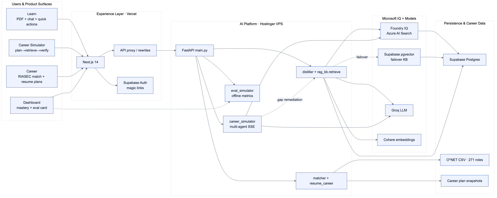
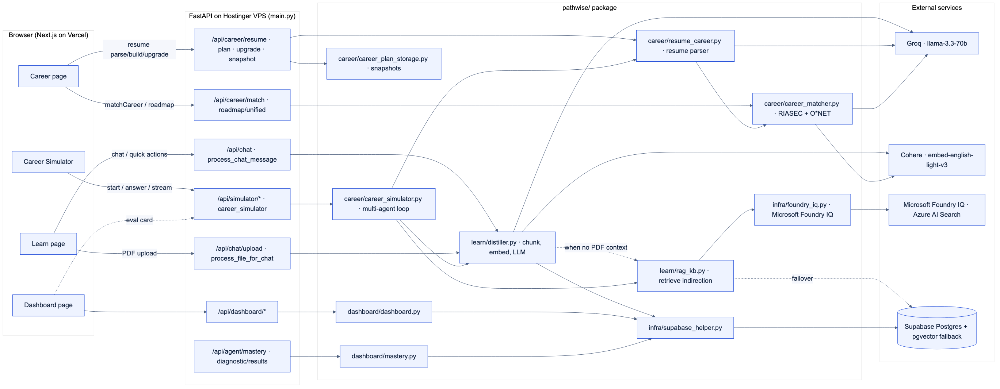

Rahul Sharma - Work Sample Portfolio
Prepared for hiring managers and technical interview loops.
Report Scope and Portfolio Context
- This report highlights three flagship hosted systems: AI Cargo, Doc2Data, and PathWise.
- These projects were selected to represent applied AI delivery across operations, healthcare, and learning products.
- Additional projects are available in the portfolio repository, including Streamlit-hosted prototypes and research-focused implementations.
- The structure below is designed for recruiter and hiring-manager scanability: problem, scope, architecture, links, and impact.
Project 01 - AI Cargo
Overview
AI Cargo is an agentic risk intelligence platform for pharmaceutical cold-chain shipments. It combines deterministic compliance rules and ML predictions, then orchestrates mitigation workflows through tool-using agents with human-in-the-loop controls. Winner of first prize ($4,000) in the Smith Agentic AI Challenge.
Problem Solved
Temperature-sensitive logistics requires immediate, compliant, and auditable decisions. Manual intervention is often slow and inconsistent for medium/high risk events.
End-to-End System Scope
- Ingest telemetry windows from Supabase with fallback data support.
- Engineer risk features and score windows via deterministic + XGBoost fusion.
- Route medium/high/critical events to LangGraph orchestration.
- Execute specialized tools (compliance, routing, scheduling, insurance, triage, approvals, notifications).
- Surface outcomes in FastAPI + React dashboard with traceability and audit logs.
Architecture Diagram
System Architecture

Data Flow

Demo
GitHub
Tech Stack
Python, FastAPI, LangGraph, XGBoost, SHAP, Optuna, Supabase, React, Tailwind.
Project 02 - Doc2Data
Overview
Doc2Data is a healthcare document-to-JSON extraction platform that processes CMS-1500 and UB-04 forms using lane-based extraction, alignment, OCR, validation, and targeted rescue logic.
Problem Solved
Healthcare form extraction is noisy and expensive when every document is forced through the same OCR pipeline. Doc2Data adapts extraction strategy per document type and quality signal.
End-to-End System Scope
- Upload PDF/image through Next.js frontend.
- LangGraph identifies form type and chooses extraction lane (widgets, digital text, scan OCR, generic).
- Alignment + OCR pipeline executes with quality gates.
- Validation pass identifies uncertain fields.
- Targeted VLM rescue runs only on selected fields.
- Final output returns structured fields, metadata, validation notes, and debug traces.
Architecture Diagram
System Architecture

Demo
GitHub
Tech Stack
FastAPI, Next.js, LangGraph, Florence-2 OCR, VLM rescue, Docker.
Project 03 - PathWise
Overview
PathWise is a full-stack AI learning and career-readiness platform built for the Agents League · Creative Apps (GitHub Copilot) track. Drop in a PDF or job posting and PathWise turns it into personalized learning content, a citation-backed Career Simulator interview, and a shareable readiness report. Grounding runs through Microsoft Foundry IQ (Azure AI Search) with automatic failover to Supabase pgvector.
Problem Solved
Learners and career switchers have fragmented material and no reliable path from “study content” to “role-ready in an interview.” PathWise closes that gap with integrated learning intelligence, O*NET-backed career matching, and a visible multi-agent loop (plan → retrieve → generate → verify) that judges and hiring managers can inspect in real time.
End-to-End System Scope
- Learner uploads a PDF or pastes a job description on the Learn or Career Simulator surfaces.
- Foundry IQ retrieves citation-backed evidence from an Azure AI Search knowledge base; Supabase pgvector serves as transparent failover.
- Distiller generates summaries, quizzes, flashcards, micro-lessons, and diagnostics grounded in retrieved context.
- Career Simulator orchestrates Planner, Retrieval, Interviewer, Scorer, Remediation, and Report agents over resume + target role.
- Agent Thinking panel streams SSE timeline events with citation chips; Readiness Report exports 30/60/90 plans and top skill gaps.
- Dashboard tracks progress, mastery, and offline eval metrics (groundedness, refusal correctness, p95 latency).
Microsoft IQ Integration
- Foundry IQ (Azure AI Search index
prepkb-index) is the primary retrieval layer for Learn chat and the Career Simulator. - Hybrid keyword + vector search with semantic reranking; every chunk carries source metadata for citations in the UI.
- Built with GitHub Copilot in VS Code — orchestrator, Foundry client, FastAPI routes, SSE timeline, and eval harness.
Architecture Diagram
High-Level Architecture

System Architecture

Demo
GitHub
Tech Stack
Next.js 14, FastAPI, Groq (llama-3.3-70b), Cohere embeddings, Microsoft Foundry IQ (Azure AI Search), Supabase (auth + pgvector fallback), Docker on Hostinger VPS, Vercel frontend.
Comparative Strength Across Work Samples
- PathWise: Foundry IQ–grounded learning + multi-agent Career Simulator (GitHub Copilot, Agents League).
- AI Cargo: Agentic operations and compliance under real-world risk constraints; first prize ($4K), Smith Agentic AI Challenge.
- Doc2Data: Multimodal document AI with robust extraction and quality controls.
Together, these projects show system design depth across user-facing UX, AI orchestration, data pipelines, and production delivery.